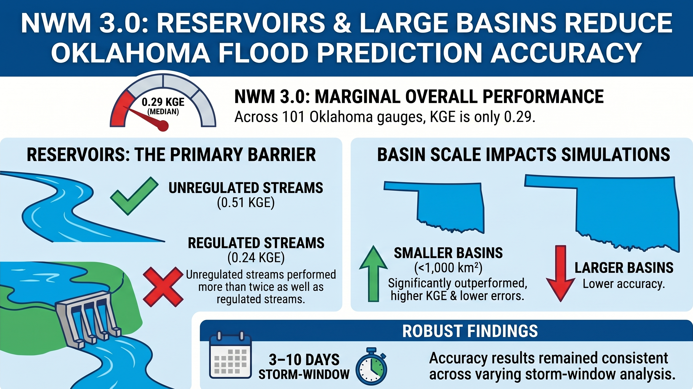
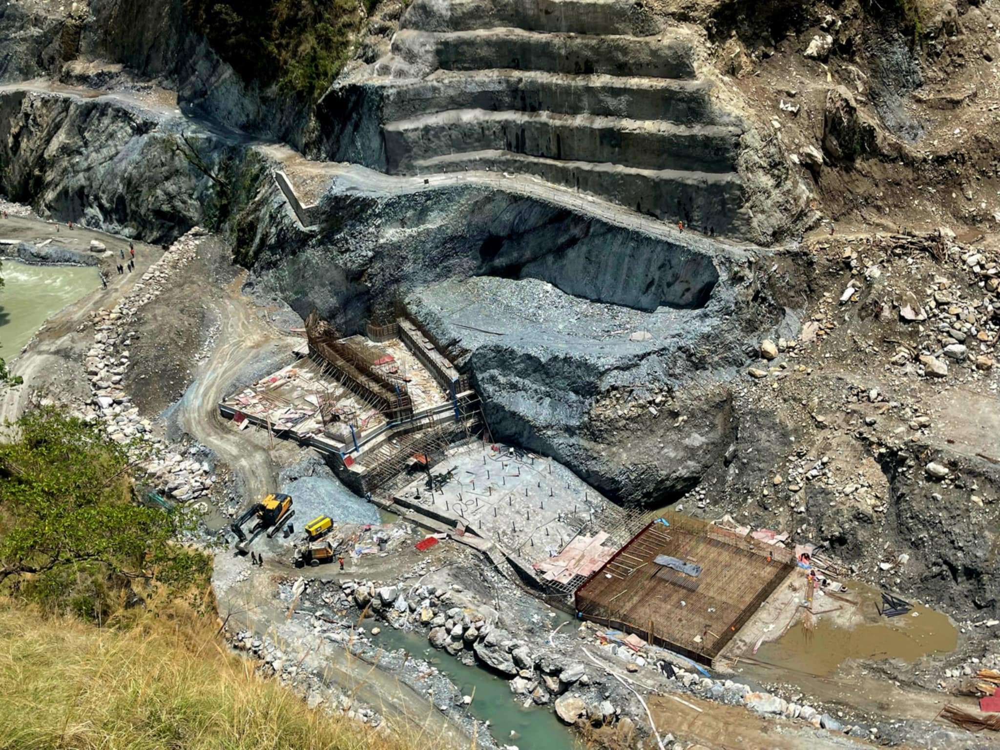
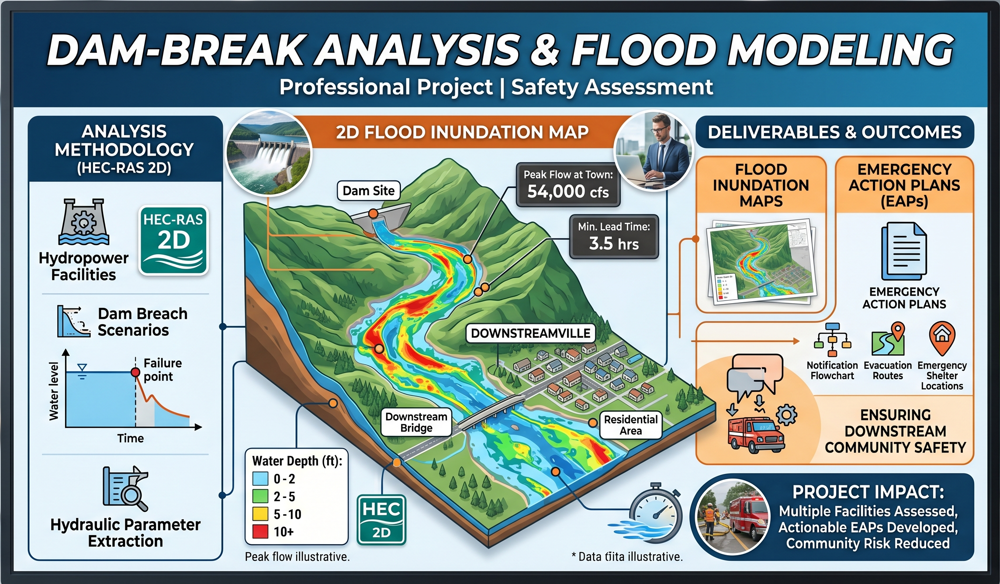
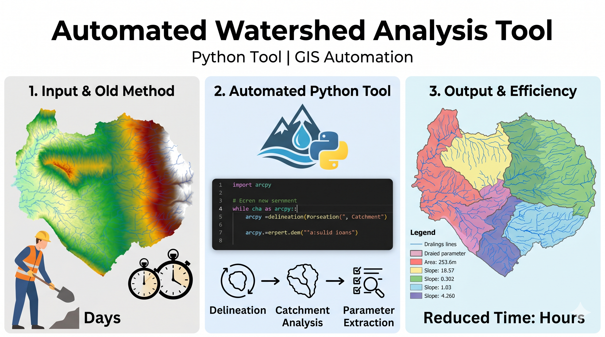

A showcase of my research, design, and construction projects

Graduate Research | Hydrological Modeling
Evaluated NWM 3.0 peak flow simulations at USGS gauges across Oklahoma, investigating the influence of reservoir regulation on flood predictions using statistical metrics (KGE, NSE, RMSE, PBIAS).

Professional Project | Hydraulic Design
Led design and hydraulic analysis for multiple hydropower rehabilitation projects including reservoirs, spillways, and conveyance systems. Developed 3D CAD models and construction drawings that reduced design iterations by 30%.

Professional Project | Safety Assessment
Performed comprehensive dam-break analysis using HEC-RAS 2D for multiple hydropower facilities. Developed flood inundation maps and emergency action plans to ensure downstream community safety.

Python Tool | GIS Automation
Developed Python-based automation tool using ArcPy for watershed delineation, catchment analysis, and hydrologic parameter extraction from DEM data. Reduced analysis time from days to hours.